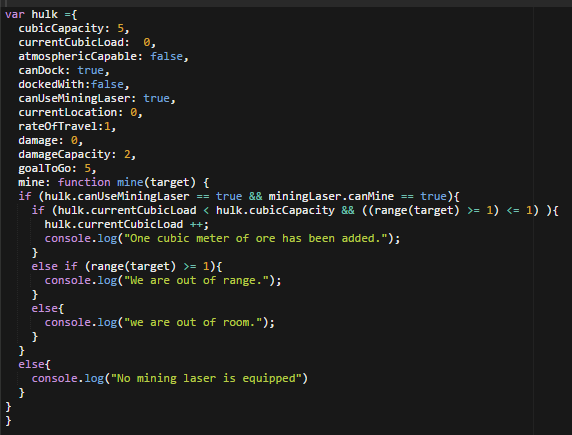

Hashs and Objects
2/14/016
At first off Ruby Hashes and Javascript objects look very similar to each other. And they are with a few exceptions. Hashs are relatively straightforward data structures
that function much like dictionaries storing a key and a value attached to that key. That value might be a number, a string, an array, or another hash.
A decent example of a hash from a previous exercise:
hash = {outer: {inner: {"almost" => {3 => "congrats!"}}}}
Javascript objects on the other hand also store a key and a value attached to that key but in addition to being able to store everything a hash is able to it can also store
functions as a value so that when that key is accessed it runs the function instead of just returning a string for instance. Additionally the way in which objects are
accessed gives them behavior very similar to classes in Ruby.
An example of a Javascript object:
